404 / Coordinates unavailable
Signal lost.
This page drifted outside the world. Return to the official Cuban DeVille hub and choose another portal.
Return to the world
This page drifted outside the world. Return to the official Cuban DeVille hub and choose another portal.
Return to the world